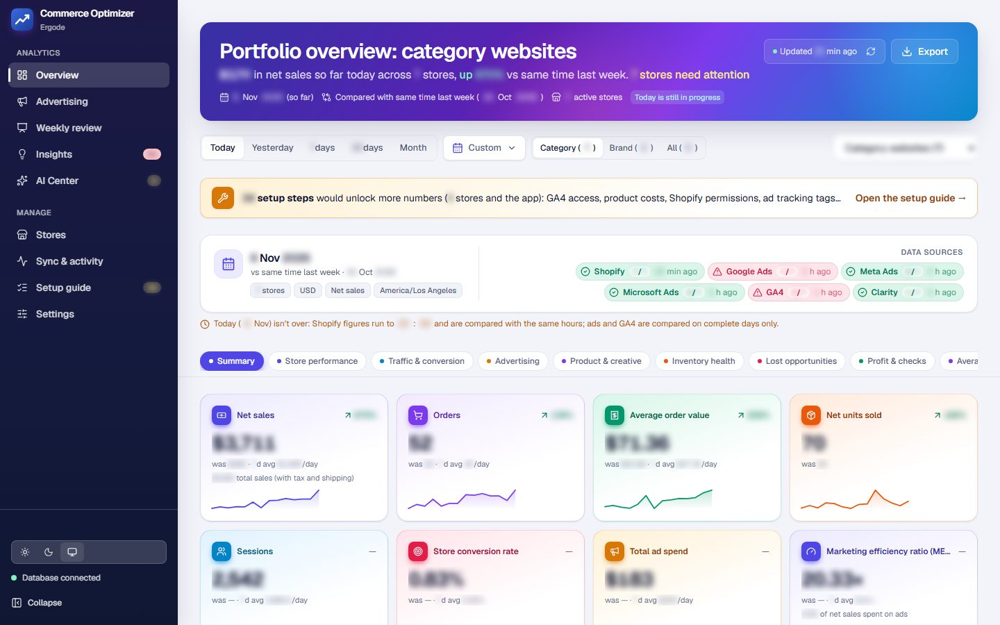
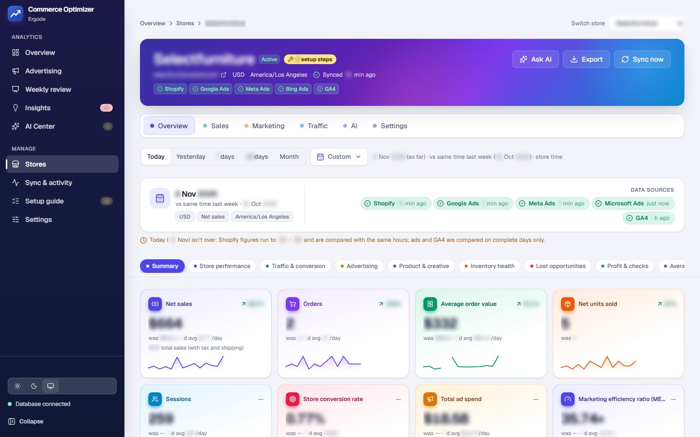
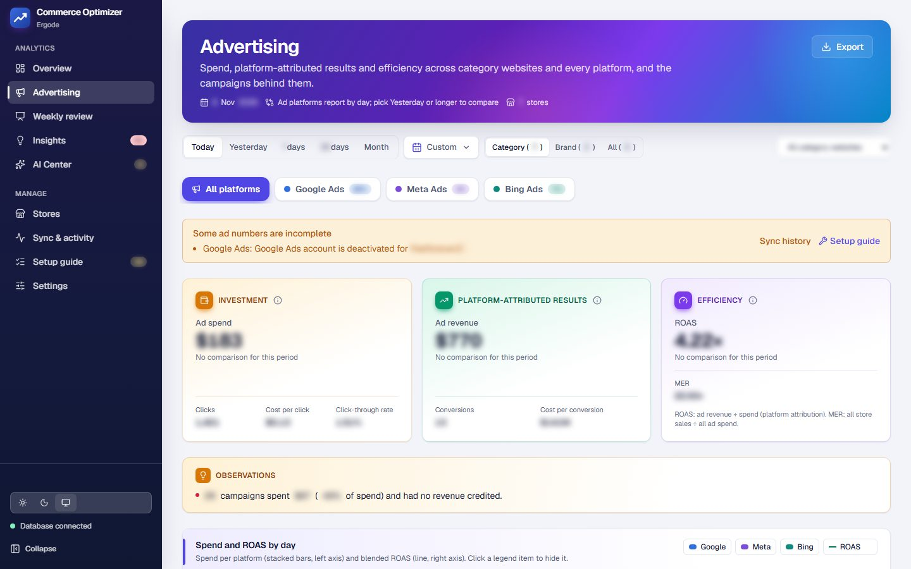
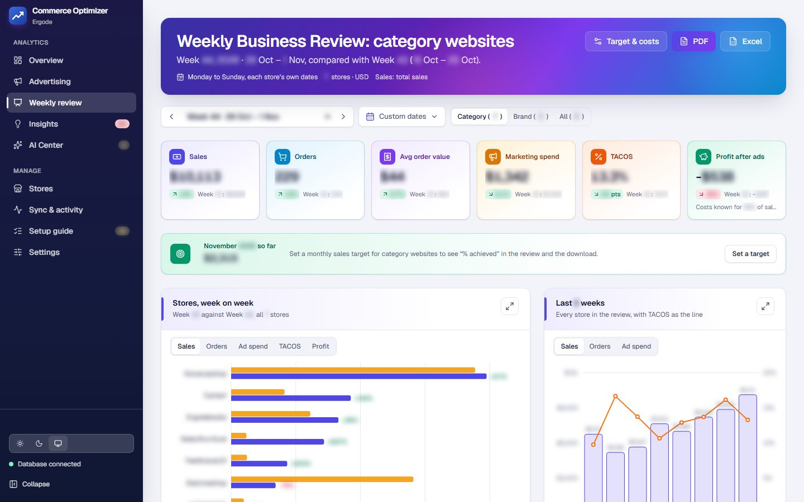
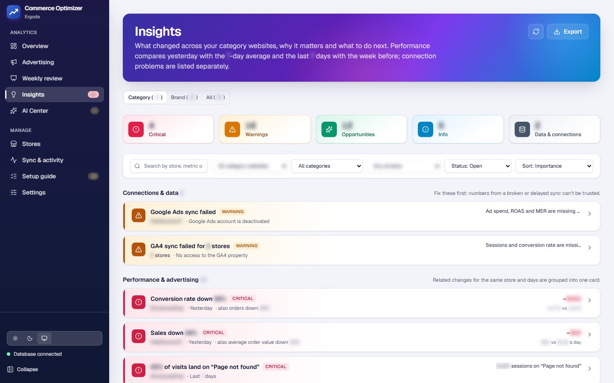

One trusted view of every store, with AI that proposes and people approve.
Commerce Optimizer brings each Shopify store's sales, advertising (Google, Meta, Microsoft), web analytics (GA4, Search Console) and on-site behaviour (Microsoft Clarity) into one dashboard. It explains what changed and why, and proposes fixes that a person approves before anything changes.

The problem
The team checked Shopify, three ad platforms and several analytics tools separately, and reconciled the numbers by hand. Nobody had one view they trusted.
The brief: one view per store and across all stores, numbers that match the source systems, changes explained in plain language, and analysis that turns into actions, but only actions a person has approved.
What I built
A portfolio view across all stores, and a workspace for each one.
Every store, compared fairly
Each store gets Overview, Sales, Marketing, Traffic, AI and Settings tabs, with the live status of every connected source.
- Today against the same weekday last week, up to the same hour
- 7 and 30 days against the period before, month to date against last month
- Every store in its own Shopify timezone; ratios from period totals, never averaged daily ratios
- When a source breaks, the store shows what happened, where to fix it and the steps

Google, Meta and Microsoft Ads on one page
Investment, platform-attributed results and efficiency side by side, down to each campaign.
- Campaigns spending without return are flagged
- Ads health score from 0 to 100, built from five data-driven checks
- Checks: broken conversion tracking, wasted search terms, budget-limited winning campaigns, Meta ad fatigue, spend without sales
- Each failed check can send a fix for approval, without AI

The Weekly Business Review, ready to send
Every store week on week, in one review that the team can download and share.
- Sales, orders, ad spend, TACOS and profit after ads per store
- ISO weeks or custom periods, for chosen websites
- Google Merchant Center and Shop app account health
- Downloads as a PDF deck or an Excel workbook

Alerts that explain themselves
Rule-based insights with the evidence, a likely cause, the money impact and the next step.
- Connection problems listed first: numbers from a broken sync cannot be trusted
- Sales and ROAS drops, refund spikes, unshipped orders, checkout abandonment, "page not found" traffic
- Reviewed, snoozed and resolved states, with history
- Filters kept in the address, so a view can be shared

How it works
From seven APIs to one set of numbers the business can trust.
Platform APIs
- Shopify Admin GraphQL (bulk operations)
- Google Ads API, Meta Marketing API, Microsoft Advertising
- GA4 Data API, Clarity, Search Console
Background workers
- Jobs claimed with
FOR UPDATE SKIP LOCKED - 180-day backfill, then incremental syncs
- Recent ad days re-synced: conversions arrive late
- A request budget per API (Clarity: 8 of 10 a day)
MySQL 8
- Orders, refunds and daily tables
- Idempotent, batched upserts
- Money as DECIMAL, times in UTC
KPIs and rules
- Fair-comparison KPI engine
- Insights and ads health checks
- 2–3k tokens of facts for the AI
React dashboard
- TanStack Query caching
- PDF, Excel and CSV exports
- AI proposals, approvals, audit log, undo
Platform tokens are encrypted with AES-256-GCM and never sent to the browser. People sign in with the company SSO.
AI that proposes, people approve
The AI (Claude, with Gemini as fallback) can act on live ad accounts, which is exactly why it isn't allowed to act alone.
The AI proposes
Pause or enable campaigns, change budgets (capped at ±20%), add negative keywords, or create discount codes.
A person approves
Each action is shown exactly as it will run, and approved individually.
It is logged and reversible
Guardrails on every action, a full audit log, one-click undo, and the effect measured afterwards.
- Guardrails: budgets change by ±20% at most; negative keywords only for real, non-converting search terms, never the brand
- Discount codes: 5–30% off, 1–14 days, once per customer; undo deactivates them
- Cost control: every call metered from token counts against a monthly AI budget; AI pauses when it is reached
- Resilience: a provider that is out of credit is skipped for 15 minutes, and Settings shows why
Engineering highlights
The parts that make the numbers trustworthy and the AI affordable.
- Financial accuracy: two refund bases; one matches Shopify's reports to the cent, the other suits judging ads
- Late data: recent ad days and GA4 days are fetched again, because platforms keep revising them
- Tight APIs: raw Clarity responses are kept, so data can be rebuilt without spending calls
- Affordable AI: Zod-validated JSON output, prompt caching, reuse of identical analyses
- Privacy: no shopper names, emails or addresses stored for abandoned checkouts
- Fast: code splitting cut the app's own bundle from 814 kB to 123 kB; revisited pages load from cache in about 0.3 s
- Quality: 141 unit tests, Oxlint with React Hooks rules, Prettier, task branches → UAT → production
Results
What I learned
Most "wrong numbers" are definition mismatches
Our sales first differed from Shopify's because refunds were counted on the order's date, not the refund's. Supporting both made it match to the cent.
Design around each API's limits
Clarity's 10 requests a day and late-arriving ad conversions shaped the whole sync, rather than being patched in later.
AI should propose, not act
On live ad accounts, the useful AI is the one that shows exactly what it will do and waits for a person.
Stack
Back end
Front end
Integrations
AI
Quality
Delivery
Want this kind of work on your team? Let's talk.
I'm open to Integration Engineer, Full Stack, Technical Lead and Shopify roles, especially in e-commerce, SaaS and AI products.